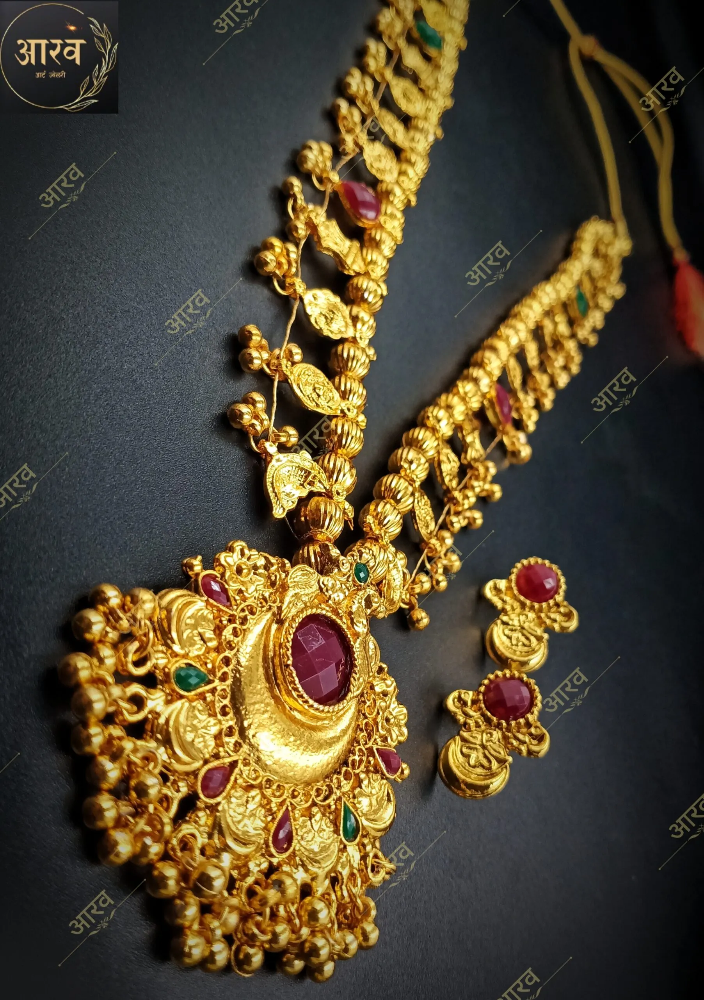
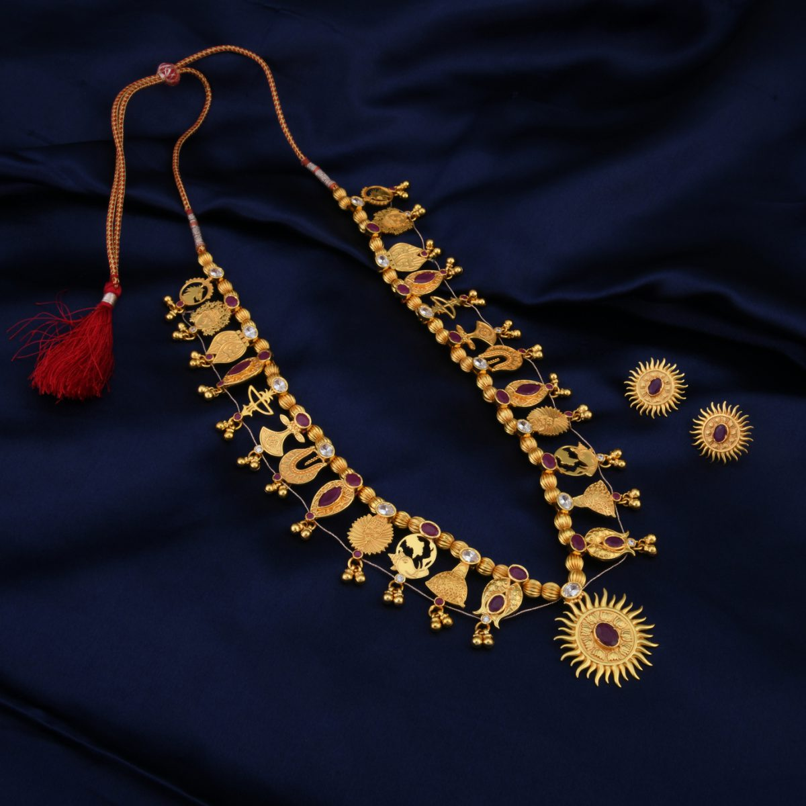

Kolhapuri Saaj |
Kolhapuri Saaj is considered as one of the finest ornamental patterns mainly worn in traditional events or functions like marriage. The meaning of Marathi word Saaj means necklace. Kolhapuri Saaj is generally made up of 21 small pendants like Ashtamangal, Sun, Flowerbirds, Tigernails, Plants, etc. but it also varies as per the requirement of the design and pattern. This popular design is not restricted to Kolhapur only, but it has blown its beauty through India and in some famous cities outside India. Kolhapuri saaj is a symbol of rich heritage and royal mindset.
|
Kolhapuri Dashavtara Saaj |
Based on the concept of Kolhapuri Saaj we have designed a Dashavtara Kolhapuri Saaj with 11 pendants embedded in it. As per the customer demand, we have created each pendant for each Avatara and added it on both rights and left sides of the chain. The ten main avatars of Vishnu include – 1. Matsya (Fish), 2. Kurma (Tortoise), 3. Varaha (Boar), 4. Narasinha (Half Man + Half Lion), 5. Vaman, 6. Parshuram, 7. Ram, 8. Krushna, 9. Buddha, 10. Kalki. The central pendant is inspired by the Sudarshan chakra of the Krushna avatar of Lord Vishnu. |